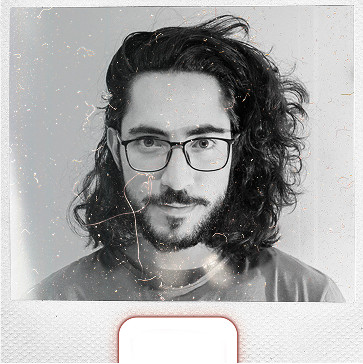

[01]
JORNADAS GUIADAS
Estruturação de jornadas guiadas para padronizar a criação de projetos analíticos e de IA em uma plataforma corporativa.
Especialista em sistemas corporativos complexos, liderança de projetos multidisciplinares e decisões
orientadas por dados.
Graduado em Psicologia e mestre em Design.
Baseado em Brasília, Distrito Federal, Brasil.
de.sig.nó.lo.go · [substantivo]


Estruturação de jornadas guiadas para padronizar a criação de projetos analíticos e de IA em uma plataforma corporativa.
Evolução, implementação e documentação de um Design System em Angular para um órgão federal de segurança e inteligência.
Seleção de interfaces criadas a partir dos objetivos de negócio, do posicionamento de marca e das necessidades do público-alvo.
Criação de experiências imersivas e soluções digitais com jogos e tecnologias de realidade virtual, aumentada e mista.
Atuação em uma plataforma de analytics e inteligência artificial de um dos maiores bancos brasileiros, conduzindo pesquisas com usuários, mapeamento de jornadas, iniciativas de gamificação e protótipos de alta fidelidade integrados ao Design System. Colaboração com equipes multidisciplinares em um ecossistema de Big Data e IA.
Liderança da evolução de um Design System e de soluções corporativas complexas para um órgão federal de segurança. Facilitação de cerimônias ágeis, alinhamento com stakeholders, especificação de componentes em Angular e pesquisas contínuas com usuários.
Desenvolvimento de experiências para diferentes produtos digitais, incluindo pesquisa com usuários, criação de personas, testes de usabilidade e prototipagem no Figma com aplicação de padrões de Design System.
Criação de e-commerces e sites institucionais em WordPress, com HTML, CSS e JavaScript. Análise de dados no Google Analytics, pesquisa de mercado, testes A/B e mapeamento de fluxos de navegação voltados à conversão e geração de leads.
2013 - 2018
2022 - 2024

Product Designer sênior e Designólogo ítalo-brasileiro com mais de oito anos de experiência em tecnologia. Integro conhecimentos de Psicologia e Design para conceber produtos digitais, especialmente em sistemas corporativos complexos, inteligência artificial e Big Data.
Atuo em governança de design e na colaboração entre Produto, Design e Engenharia, orientando equipes multidisciplinares e múltiplas squads. Minha experiência inclui Design Ops, evolução de Design Systems e alinhamento entre decisões de experiência, viabilidade técnica e objetivos de negócio.